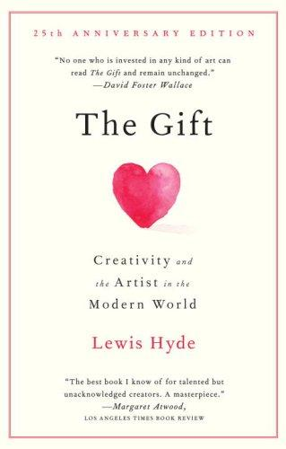

The Gift is Lewis Hyde's long meditation on a deceptively simple question: why does making art feel so different from making a living? His answer is that a work of art belongs to a gift economy, in which things are received, passed on and kept alive by movement, while the culture around it increasingly treats everything as a commodity to be bought, sold and settled.
The book is built in two halves. Part One is a theory of gifts, assembled from anthropology (the Kula ring, the Maori hau, first-salmon rites), folktales, Alcoholics Anonymous and the history of usury. Part Two applies the theory to two poets: Walt Whitman, who tried to live as a giver, and Ezra Pound, whose sharp insight into money turned into something far darker.
It is part anthropology, part literary criticism, part moral philosophy, and it is written with a poet's care for language. It does not offer a business model for artists. It gives them, and the rest of us, a vocabulary for understanding why some work feels like an offering and why it suffers when treated as only a product.
The book's central contrast, as I understand it, laid out side by side. This is my summary of Hyde's distinction and not a quotation from the text.
Hyde's view is that the creative ability you carry was given to you. That does not excuse laziness, and it does ask for humility and gratitude, and for the willingness to serve the work.
The work and the knowledge behind it improve when passed on, through teaching, mentoring, sharing and publishing, and not just when kept as a private asset.
Hyde accepts that artists have to eat. His suggestion is to find ways of being paid that do not distort the work, whether through patronage, side work or a separate income line, and keep the creative core insulated.
AA's logic shows how a group can run on passing the gift forward rather than on tracking who owes whom. The healthiest creative communities work the same way.
Pound's story is a reminder that anger at money and institutions needs to stay anchored in evidence and in compassion for real people.
No one who is invested in any kind of art can read The Gift and remain unchanged.
The best book I know of for talented but unacknowledged creators. A masterpiece.
The gift must always move.
The commerce of the creative spirit.
Paraphrases of the book's main arguments, not direct quotes.
A gift is something we are handed, not something we can purchase or will into being.
A purchase ends a relationship; a gift extends it.
Receiving a gift creates work: the labour of becoming worthy of it and passing something on.
An artist can sell the work but not the gift that made it, so the two economies have to be kept in balance.
The best of what we make arrives as a gift, and it stays alive only if we keep passing it on. A culture that measures everything in price will eventually starve the thing it most wants.
The Gift earns its reputation as a classic. It is not an easy read, and Part One asks for patience, but its central distinction between gift and commodity keeps proving useful long after the last page. The Whitman and Pound chapters give the theory flesh and a warning.
Read it slowly, mark the passages that speak to your own work, and then pass the book on. That would be the most fitting way to finish it.